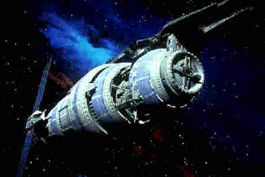
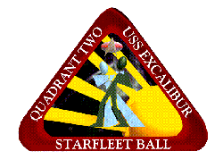

This is just my bit of fun with the USS Excalibur, the main Excalibur Homepage (not available on Archive.org) (by Sean Douch) is pretty stunning, and was nominated for at least one award (from Yell.co.uk).

Guest of honour at the ball was Richard Biggs, who plays Dr Franklin in Babylon 5 - travelling out of America for the very first time. Also coming was his real-life girlfriend, she can been seen on-screen dancing with Richard in ep3.3 in Earhart's. Among the goodies he brought over were the blooper reels of B5 seasons 1 & 2, and some from season 3. Also he asked (and recieved) permission from JMS himself to bring eps 3.8 thru 3.11 - and so we got to see episode 11 even before the Americans would.
For Richard's thank-you present, the Excalibur presented him a Worm-Do (it's an in-joke) and one of the convention T-Shirts. (the logo on them is as seen below)
The USS Excalibur is blessed with many talented people, (many of whom attended Bournemouth University). Our first occifer (and part-time mutineer), for example is Bea Jones, a Computer Animator and graphic designer. She is usually to be found in the Excalibur's dealing room producing sketches of anyone who wants one, and selling copies of her other pictures (though she keeps the multi-metre square ones for the Excalibur's walls!)

She also produced a couple of graphics for the Second Starfleet Ball.
Click on the picture to see some of the crew!
August 2017 - Starfleet Ball has been continued by the crew of the Excalibur as the SF Ball convention